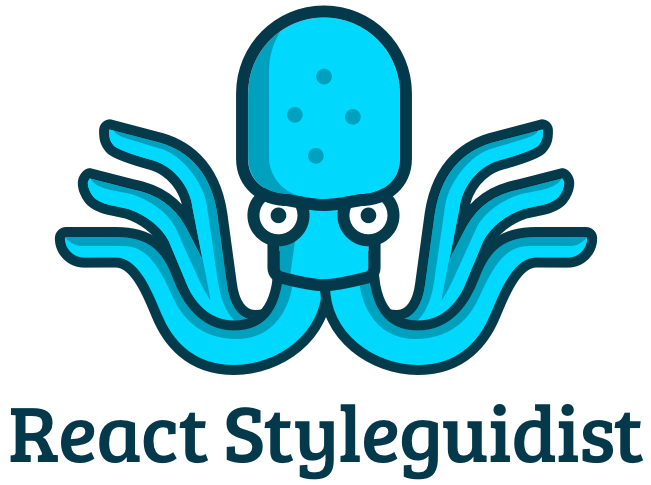
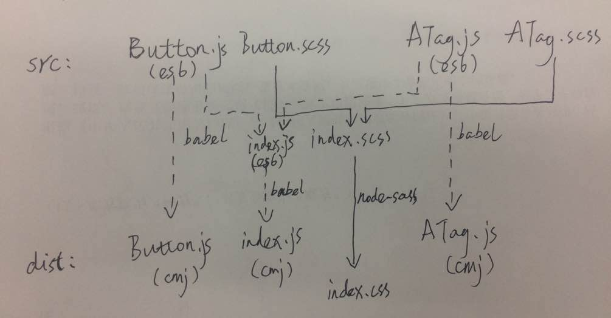

class: cover .cover-content[ # Tubi Web UI ] --- # Why --- ## Reason #1 .code-block.code-block--smaller[ ```bash $ git ls-files src/common/components/ | grep '.js' | wc -l 260 $ git grep '<ATag' | wc -l 70 $ git grep '<Button' | wc -l 37 $ git grep '<SeriesDetail' | wc -l 1 ``` ] ### Lots of Components, but for different usages -- ### [Separation of Concerns](https://en.wikipedia.org/wiki/Separation_of_concerns) --- ## Reason #2 ### Need one UI language to enhance ### user experience / design / development --- # Targets .trigger-time.trigger-time--2em[ - Good and easy generated documents - Reusable, flexible, and well tested UI components - High performance - Efficient tools ] --- # Document <div>  </div> ### [react-styleguidist](https://github.com/styleguidist/react-styleguidist) --- # Demo -- ### It's very important that everyone in the team could see the UI documents --- # Component Structure .code-block[ ```bash src/Button/ ├── Button.js ├── Button.md ├── Button.scss └── Button.spec.js ``` ] --- # Build <div>  </div> --- # Why no CSS Module? .trigger-time.trigger-time--2em[ - follow mainstream UI libraries - easy to overwrite in high level repo - easy to use some utility class name directly ] --- # CSS Naming ## [BEM](http://getbem.com/) .code-block[ ```css .Button {} .Button__icon {} .Button--centered {} ``` ] ### use Component name as block name --- # Why Babel instead of Webpack? .trigger-time.trigger-time--2em[ - easy to directly import specific components - no imported css in js - friendly for css-in-js in near future ] --- # Code Quality .trigger-time.trigger-time--2em[ - strict lint rules - test code coverage threshold - strict code review ] --- # How to integrate with www development? .code-block[ ```bash # link @tubitv/web_ui to global node_modules $ cd path/to/web_ui $ yarn link # link local @tubitv/web_ui package $ cd path/to/www $ yarn link @tubitv/web_ui ``` ] ### [yarn issue](https://github.com/yarnpkg/yarn/issues/1214) --- # TODO List .trigger-time.trigger-time--2em[ - TypeScript? - tools (auto generated changelog, ) - code coverage service ] --- # Plan ## Use it in New Branding development --- name: last-page # Thanks